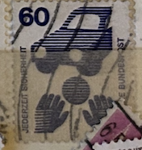
| SOURCE | TITLE| IMAGE MATCH | click to source page |
| Mystic Stamp | 1074//82 - 1971-74 Germany - Mystic Stamp Company | 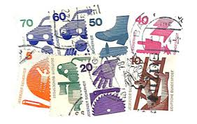 |
| Amazon.com | Amazon.com: FRD (FR.Germany) 773 SR Side Piece (Complete.Issue.) unmounted Mint/Never hinged ** MNH 1973 Accident Prevention (Stamps for Collectors) : Toys & Games | 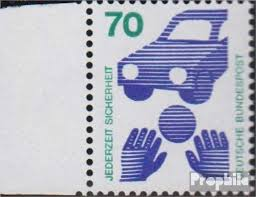 |
| eBay | Deutsche Bundespost - Germany Stamp Booklet 1971 Information About Accidents H47 | eBay | 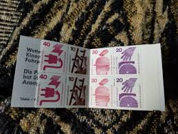 |
| Old-Stamps.com | Jederzeit Sicherheit / Deutsche Bundespost 1972 | 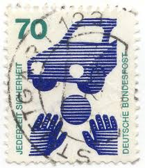 |
| eBay | GERMANY Mi. #MH 20c II mZ rare mint MNH stamp booklet! CV $825.00 | eBay |  |
| The Philately | Germany 1971-1974 Mi 694A-703A Prevent accidents Sc 1074-1081, 1083, 1085 for sale at The Philately | 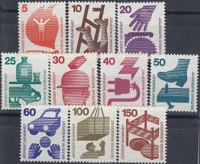 |
| ebid.net | GERMANY, Jederzeit Sicherheit, spielendes Kind und Auto, 1971, 60 Pf on eBid United Kingdom | 190196904 | 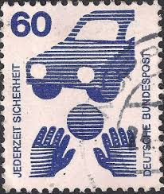 |
| Shutterstock | deutsche_post": Over 5,976 Royalty-Free Licensable Stock Photos | Shutterstock | |
| Mystic Stamp | 1074//85 - 1971-74 Germany - Mystic Stamp Company |  |
| Shutterstock | Postage Stamps On Health: Over 4,172 Royalty-Free Licensable Stock Photos | Shutterstock | |
| eBay | Lot De Feuilles De Timbres 20 D II Neuf (BUMH 20 D II) | eBay | 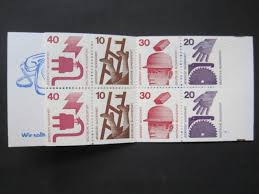 |
| Dreamstime.com | 3,668 Stamp Safety Stock Photos - Free & Royalty-Free Stock Photos from Dreamstime - Page 6 |  |
| eBay | Germany, Postage Stamp, #1076, 1078-1079, 1082-1083 Mint NH, 1971 (AC) | eBay |  |
| eBay | 1974 Accident prevention,Unfall,Electricity,Electric device,Construction,Germany | eBay |  |
| Dreamstime.com | Isolated German Stamp editorial photography. Image of postage - 273715882 | 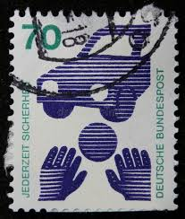 |
| Mystic Stamp | 1079-82 - 1971-73 Germany - Mystic Stamp Company | 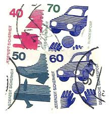 |
| eBay | GERMANY SCOTT # 9N323A, TRAFFIC SAFETY, USED, , GREAT PRICE! | eBay | 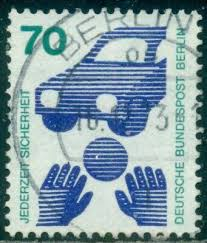 |
| eBay | 1195)) BRD UV kompletter Satz ** in 4er Block W OR, einwandfrei | eBay | 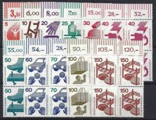 |
| Shutterstock | German Stamp: Over 22,565 Royalty-Free Licensable Stock Photos | Shutterstock |  |
| iStock | German Postage Stamp Dedicated To Accident Insurance Stock Photo - Download Image Now - iStock | 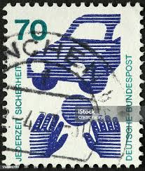 |
| eBay UK | BERLIN Zusammendrucke Michel: W46, W48, W50, W49, W47, USED, Lot24, €17.40 | eBay UK | 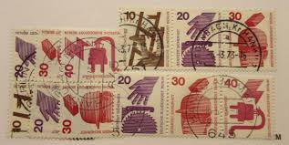 |
| eBay | Bundle W 55 stamped, Mi. 5.50 | eBay | 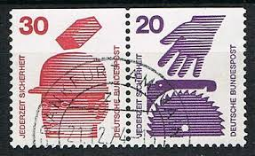 |
| eBay | BERLIN Zusammendrucke Michel: W46, W48, W50, W49, W47, MNH, Lot24, Cat €8.70 | eBay |  |
| Dreamstime.com | 538 Accident Stamp Stock Photos - Free & Royalty-Free Stock Photos from Dreamstime | 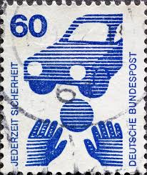 |
| eBay | BERLIN Zusammendrucke Michel: W57, W58, USED Lot24 Cat €24 | eBay | 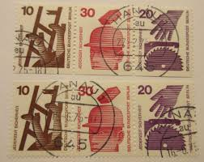 |
| iStock | German Stamp Shows Lane Discipline Stock Photo - Download Image Now - 1971, Avenue, Black Color - iStock | 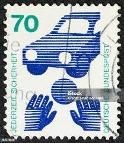 |
| eBay | Germany Scott 9N316-9N325 Unused lightly hinged. | eBay | 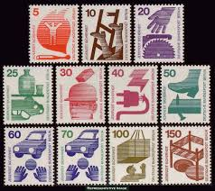 |
| eBay | Germany, Postage Stamp, #1075-1076, 1078-1080, 1082-1084 Mint NH, 1971 (AB) | eBay | 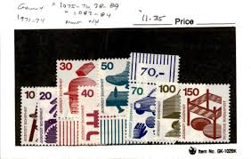 |
| eBay | Germany 1974 MiNr. W53 Accident prevention USED VF | eBay |  |
| eBay | Berlin 1971, Accident Prevention I set VF MNH, Mi 402A-411A cat 17€ | eBay | 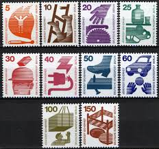 |
| Dreamstime.com | GERMANY - CIRCA 1971: a Stamp Printed in Germany from the `Accident Prevention` Issue Shows a Ball in Front of a Car Child Road S Editorial Photography - Image of historic, mail: 185864702 | 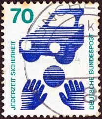 |
| eBay | GERMANY DEUTSCHE BUNDESPOST 1974 ACCIDENT PREVENTION 2DM BOOKLET MNH | eBay | 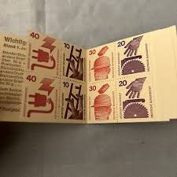 |
| eBay | GERMANY Mi. #MH 20d mint MNH stamp booklet! CV $21.50 | eBay | 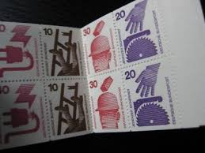 |
| Dreamstime.com | 535 Stamp Accident Stock Photos - Free & Royalty-Free Stock Photos from Dreamstime | 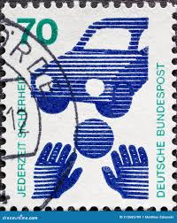 |
| eBay | Stamps FRD (FR.Germany) 1974 Mi MH20d I mZ with zählbalken (complete (10587975 | eBay | 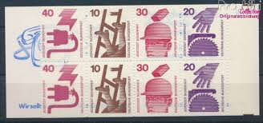 |
| Amazon.com | Amazon.com: Berlín (oeste) 409DZ con impresión de signos 1971 Prevención de accidentes (sellos para coleccionistas) : Juguetes y Juegos |  |
| Shutterstock | Poland- Circa 1981 Stamp Printed By Stock Photo 88263004 | Shutterstock | 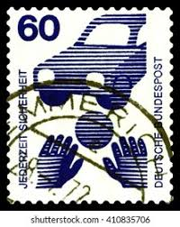 |
| Poppe Stamps | Poppe Stamps: German Federal Republic, 1971, 1603a, Hands, Ball, Cars - stamps for sale by theme and country | 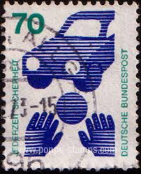 |
| eBay | GERMANY Mi. #MH 20e mint MNH stamp booklet! CV $21.50 | eBay |  |
| eBay | GERMANY Mi. #MH 20 mint MNH stamp booklet! CV $21.50 | eBay | 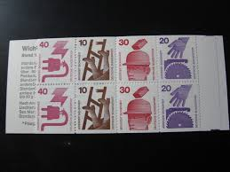 |
| Stampedia | stampedia GERMANY STAMP catalog | 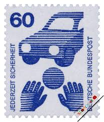 |
| eBay | BRD, 1974 Unfallverhütung Markenheftchen 20c **, (21926) | eBay |  |
| eBay | 1974, Berlin, MH 9 cI oZ, ** - 1784487 | eBay |  |
| eBay | Stamp Germany, Scott # 1075c Mint NH complete booklet, precancelled | eBay |  |
| Dreamstime.com | A Brick Falls on a Man Wearing a Hard Hat on a 1972 Germany Vintage Postage Stamp. Editorial Stock Photo - Image of retro, hobby: 387616603 |  |
| Todocolección | alemania 1985 matasello especial - 25-5 - Buy Antique stamps of Germany on todocoleccion | 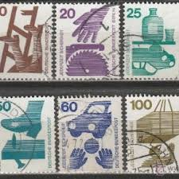 |
| kine-eksaarde.be | Berlin West 1972 Stamp Hbl16 Berlin (West) W47 Mint/MNH 1972 Accident Prevention Collector Stamp Berlin West |  |
| eBay | Cars Stamps 1971-1980 Year of Issue for sale | eBay | 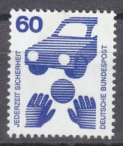 |
| eBay | Germany / MH 20a Accident Prevention . MNH.... | eBay | 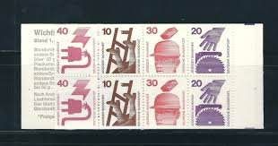 |
| Alamy | Accident stamp hi-res stock photography and images - Alamy | 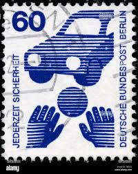 |
| ProBoards | Roads, Highways, Traffic and Traffic Safety on Stamps | The Stamp Forum (TSF) | 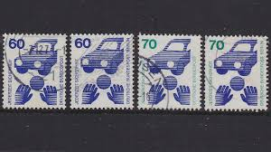 |
| eBay | BERLIN Zusammendrucke Michel: W51, W52, W59, W60, MNH, Lot24 Cat €28 | eBay |  |
| brigin.lt | Copyright © 2004 By Scott Publishing Co. GERMANY — GERMAN OCCUPATION STAMPS 154 GERMAN OCCUPATION STAMPS |  |
| eBay | Travelstamps: Germany Berlin Stamps Scott #9N316-9N325 Mint MNH OG | eBay | 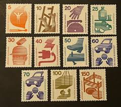 |
| Amazon.com | Amazon.com: FRD (FR.Germany) W56 unmounted Mint/Never hinged ** MNH 1974 Accident Prevention (Stamps for Collectors) : Toys & Games |  |
| Todocolección | sello de alemania, 3 pfennig hölderlin - württe - Buy Antique stamps of Germany on todocoleccion | 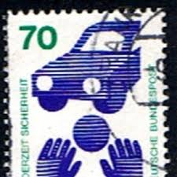 |
| Alamy | 70 pf german pfennig hi-res stock photography and images - Alamy | |
| Dreamstime.com | Road Safety Sign for Skid Risk Editorial Stock Image - Image of tyre, advising: 74179184 | 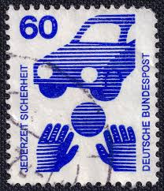 |
| eBay | Germany SC # 1075c Accident Prevention , Michel MH8a . Booklet .MNH | eBay |  |
| GetArchive | 59 1971 deutsche bundespost stamps Images: PICRYL - Public Domain Media Search Engine Public Domain Search | 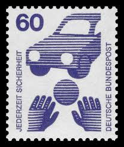 |